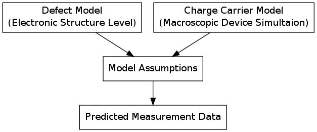

RASI is a software package for the modeling of defects in semiconductors and (especially) at semiconductor-insulator interfaces. It is implemented as a library for the Python programming language within the European Union FP7 project MORDRED.
As of yet, the library implements a post-processing toolflow that brings together microscopic defect data from electronic structure calculations and charge carrier data from macroscopic device models.

Contents: